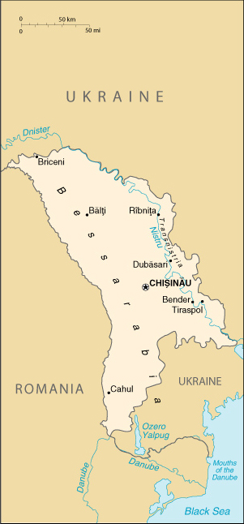

|
Moldova | |
| Introduction Geography People Government Economy Communications Transportation Military Transnational Issues | ||
|  | ||
| Moldova | Introduction | Top of Page |
| Background: | Formerly ruled by Romania, Moldova became part of the Soviet Union at the close of World War II. Although independent from the USSR since 1991, Russian forces have remained on Moldovan territory east of the Nistru (Dnister) River supporting the Slavic majority population, mostly Ukrainians and Russians, who have proclaimed a "Transnistria" republic. One of the poorest nations in Europe and plagued by a moribund economy, in 2001 Moldova became the first former Soviet state to elect a communist as its president. |
| Moldova | Geography | Top of Page |
| Location: | Eastern Europe, northeast of Romania |
| Geographic coordinates: | 47 00 N, 29 00 E |
| Map references: | Commonwealth of Independent States |
| Area: |
total:
33,843 sq km
land: 33,371 sq km water: 472 sq km |
| Area - comparative: | slightly larger than Maryland |
| Land boundaries: |
total:
1,389 km
border countries: Romania 450 km, Ukraine 939 km |
| Coastline: | 0 km (landlocked) |
| Maritime claims: | none (landlocked) |
| Climate: | moderate winters, warm summers |
| Terrain: | rolling steppe, gradual slope south to Black Sea |
| Elevation extremes: |
lowest point:
Nistru (Dnister) River 2 m
highest point: Dealul Balanesti 430 m |
| Natural resources: | lignite, phosphorites, gypsum, arable land |
| Land use: |
arable land:
53%
permanent crops: 14% permanent pastures: 13% forests and woodland: 13% other: 7% (1993 est.) |
| Irrigated land: | 3,110 sq km (1993 est.) |
| Natural hazards: | landslides (57 cases in 1998) |
| Environment - current issues: | heavy use of agricultural chemicals, including banned pesticides such as DDT, has contaminated soil and groundwater; extensive soil erosion from poor farming methods |
| Environment - international agreements: |
party to:
Air Pollution, Biodiversity, Climate Change, Desertification, Hazardous Wastes, Ozone Layer Protection, Wetlands
signed, but not ratified: Air Pollution-Persistent Organic Pollutants |
| Geography - note: | landlocked |
| Moldova | People | Top of Page |
| Population: | 4,431,570 (July 2001 est.) |
| Age structure: |
0-14 years:
22.44% (male 506,303; female 488,311)
15-64 years: 67.62% (male 1,437,492; female 1,559,090) 65 years and over: 9.94% (male 163,473; female 276,901) (2001 est.) |
| Population growth rate: | 0.05% (2001 est.) |
| Birth rate: | 13.35 births/1,000 population (2001 est.) |
| Death rate: | 12.6 deaths/1,000 population (2001 est.) |
| Net migration rate: | -0.3 migrant(s)/1,000 population (2001 est.) |
| Sex ratio: |
at birth:
1.05 male(s)/female
under 15 years: 1.04 male(s)/female 15-64 years: 0.92 male(s)/female 65 years and over: 0.59 male(s)/female total population: 0.91 male(s)/female (2001 est.) |
| Infant mortality rate: | 42.74 deaths/1,000 live births (2001 est.) |
| Life expectancy at birth: |
total population:
64.6 years
male: 60.15 years female: 69.26 years (2001 est.) |
| Total fertility rate: | 1.67 children born/woman (2001 est.) |
| HIV/AIDS - adult prevalence rate: | 0.2% (1999 est.) |
| HIV/AIDS - people living with HIV/AIDS: | 4,500 (1999 est.) |
| HIV/AIDS - deaths: | less than 100 (1999 est.) |
| Nationality: |
noun:
Moldovan(s)
adjective: Moldovan |
| Ethnic groups: |
Moldovan/Romanian 64.5%, Ukrainian 13.8%, Russian 13%, Gagauz 3.5%, Jewish 1.5%, Bulgarian 2%, other 1.7% (1989 est.)
note: internal disputes with ethnic Slavs in the Transnistrian region |
| Religions: | Eastern Orthodox 98.5%, Jewish 1.5%, Baptist (only about 1,000 members) (1991) |
| Languages: | Moldovan (official, virtually the same as the Romanian language), Russian, Gagauz (a Turkish dialect) |
| Literacy: |
definition:
age 15 and over can read and write
total population: 96% male: 99% female: 94% (1989 est.) |
| Moldova | Government | Top of Page |
| Country name: |
conventional long form:
Republic of Moldova
conventional short form: Moldova local long form: Republica Moldova local short form: none former: Soviet Socialist Republic of Moldova; Moldavia |
| Government type: | republic |
| Capital: | Chisinau |
| Administrative divisions: | 10 juletule (singular - juletul), 1 municipality*, and 1 autonomous territorial unit**; Balti, Cahul, Chisinau, Chisinau*, Dubasari, Edinet, Gagauzia**, Lapusna, Orhei, Soroca, Tighina, Ungheni |
| Independence: | 27 August 1991 (from Soviet Union) |
| National holiday: | Independence Day, 27 August (1991) |
| Constitution: | new constitution adopted 28 July 1994; replaces old Soviet constitution of 1979 |
| Legal system: | based on civil law system; Constitutional Court reviews legality of legislative acts and governmental decisions of resolution; it is unclear if Moldova accepts compulsory ICJ jurisdiction but accepts many UN and Organization for Security and Cooperation in Europe (OSCE) documents |
| Suffrage: | 18 years of age; universal |
| Executive branch: |
chief of state:
President Vladimir VORONIN (since 4 April 2001)
head of government: Prime Minister Vasile TARLEV (since 15 April 2001), three Deputy Prime Ministers: Valerian CRISTEA, Andrei CUCU, and Dmitri TODOROGLO (all since 19 April 2001) cabinet: selected by prime minister, subject to approval of Parliament elections: president elected by Parliament for a four-year term; election last held 4 April 2001; presidential elections were scheduled for December 2000, but in July 2000, Parliament canceled direct popular elections; Parliament's failure to chose a new president in December 2000 led to early parliamentary elections (moved up a year to February 2001); according to the Moldovan constitution, the president, on consulting with Parliament, will designate a candidate for the office of prime minister; within 15 days from designation, the prime minister-designate will request a vote of confidence from the Parliament regarding his/her work program and entire cabinet; prime minister designated on 15 April 2001, cabinet received vote of confidence on 19 April 2001 election results: Vladimir VORONIN elected president; parliamentary votes - Vladimir VORONIN 71, Dumitru BRAGHIS 15, Valerian CHRISTEA 3; Vasile TARLEV elected Prime Minister; parliamentary votes of confidence - 75 of 101 |
| Legislative branch: |
unicameral Parliament or Parlamentul (101 seats; parties and electoral blocs, as well as independent candidates, elected by popular vote to serve four-year terms)
elections: last held 25 February 2001 (next to be held NA 2005) election results: percent of vote by party - PCM 50.1%, Braghis Alliance 13.4%, PPCD 8.2%, other parties 28.3%; seats by party - PCM 71, Braghis Alliance 19, PPCD 11 |
| Judicial branch: | Supreme Court; Constitutional Court (the sole authority for constitutional judicature) |
| Political parties and leaders: | Braghis Alliance [Dumitru BRAGHIS]; Popular Christian Democratic Party or PPCD [Iurie ROSCA]; Communist Party or PCM [Vladimir VORONIN, first chairman] |
| Political pressure groups and leaders: | NA |
| International organization participation: | ACCT, BIS, BSEC, CCC, CE, CEI, CIS, EAPC, EBRD, ECE, FAO, IAEA, IBRD, ICAO, ICFTU, IDA, IFAD, IFC, ILO, IMF, Intelsat (nonsignatory user), Interpol, IOC, IOM (observer), ISO (correspondent), ITU, OPCW, OSCE, PFP, UN, UNCTAD, UNESCO, UNIDO, UPU, WHO, WIPO, WMO, WToO, WTrO (observer) |
| Diplomatic representation in the US: |
chief of mission:
Ambassador Ceslav CIOBANU
chancery: 2101 S Street NW, Washington, DC 20008 telephone: [1] (202) 667-1130 FAX: [1] (202) 667-1204 |
| Diplomatic representation from the US: |
chief of mission:
Ambassador Rudolf Vilem PERINA
embassy: Strada Alexei Mateevicie, #103, Chisinau 2009 mailing address: use embassy street address; pouch address - American Embassy Chisinau, Department of State, Washington, DC 20521-7080 telephone: [373] (2) 23-37-72 FAX: [373] (2) 23-30-44 |
| Flag description: | same color scheme as Romania - three equal vertical bands of blue (hoist side), yellow, and red; emblem in center of flag is of a Roman eagle of gold outlined in black with a red beak and talons carrying a yellow cross in its beak and a green olive branch in its right talons and a yellow scepter in its left talons; on its breast is a shield divided horizontally red over blue with a stylized ox head, star, rose, and crescent all in black-outlined yellow |
| Moldova | Economy | Top of Page |
| Economy - overview: | Moldova enjoys a favorable climate and good farmland but has no major mineral deposits. As a result, the economy depends heavily on agriculture, featuring fruits, vegetables, wine, and tobacco. Moldova must import all of its supplies of oil, coal, and natural gas, largely from Russia. Energy shortages contributed to sharp production declines after the breakup of the Soviet Union in 1991. As part of an ambitious reform effort, Moldova introduced a convertible currency, freed all prices, stopped issuing preferential credits to state enterprises, backed steady land privatization, removed export controls, and freed interest rates. Yet these efforts could not offset the impact of political and economic difficulties, both internal and regional. In 1998, the economic troubles of Russia, by far Moldova's leading trade partner, were a major cause of the 8.6% drop in GDP. In 1999, GDP fell again, by 4.4%, the fifth drop in the past seven years; exports were down, and energy supplies continued to be erratic. GDP declined slightly in 2000, with a serious drought hurting agriculture. Growth should turn positive in 2001. |
| GDP: | purchasing power parity - $11.3 billion (2000 est.) |
| GDP - real growth rate: | -1.5% (2000 est.) |
| GDP - per capita: | purchasing power parity - $2,500 (2000 est.) |
| GDP - composition by sector: |
agriculture:
31%
industry: 35% services: 34% (1998) |
| Population below poverty line: | 75% (1999 est.) |
| Household income or consumption by percentage share: |
lowest 10%:
2.7%
highest 10%: 25.8% (1992) |
| Inflation rate (consumer prices): | 32% (2000 est.) |
| Labor force: | 1.7 million (1998) |
| Labor force - by occupation: | agriculture 40%, industry 14%, other 46% (1998) |
| Unemployment rate: | 1.9% (includes only officially registered unemployed; large numbers of underemployed workers) (November 2000) |
| Budget: |
revenues:
$536 million
expenditures: $594 million, including capital expenditures of $NA (1998 est.) |
| Industries: | food processing, agricultural machinery, foundry equipment, refrigerators and freezers, washing machines, hosiery, sugar, vegetable oil, shoes, textiles |
| Industrial production growth rate: | 3% (2000 est.) |
| Electricity - production: | 4.155 billion kWh (1999) |
| Electricity - production by source: |
fossil fuel:
93.62%
hydro: 6.38% nuclear: 0% other: 0% (1999) |
| Electricity - consumption: | 5.78 billion kWh (1999) |
| Electricity - exports: | 0 kWh (1999) |
| Electricity - imports: | 1.916 billion kWh (1999) |
| Agriculture - products: | vegetables, fruits, wine, grain, sugar beets, sunflower seed, tobacco; beef, milk |
| Exports: | $500 million (f.o.b., 2000) |
| Exports - commodities: | foodstuffs 57%, wine, tobacco; textiles and footwear, machinery (1999) |
| Exports - partners: | Russia 41%, Romania 9%, Germany 8%, Ukraine 7%, Italy, Belarus (1999) |
| Imports: | $761 million (f.o.b., 2000) |
| Imports - commodities: | mineral products and fuel 38%, machinery and equipment, chemicals, textiles (1999) |
| Imports - partners: | Russia 21%, Romania 16%, Ukraine 14%, Germany 12%, Italy 6%, Belarus (1999) |
| Debt - external: | $900 million (2000) |
| Economic aid - recipient: | $100.8 million (1995); note - $547 million from the IMF and World Bank (1992-99) |
| Currency: | Moldovan leu (MDL) |
| Currency code: | MDL |
| Exchange rates: | lei per US dollar - 12.3728 (January 2001), 12.4342 (2000), 10.5158 (1999), 5.3707 (1998), 4.6236 (1997), 4.6045 (1996); note - lei is the plural form of leu |
| Fiscal year: | calendar year |
| Moldova | Communications | Top of Page |
| Telephones - main lines in use: | 627,000 (1997) |
| Telephones - mobile cellular: | 2,200 (1997) |
| Telephone system: |
general assessment:
inadequate, outmoded, poor service outside Chisinau, some effort to modernize is under way
domestic: new subscribers face long wait for service; mobile cellular telephone service being introduced international: service through Romania and Russia via landline; satellite earth stations - Intelsat, Eutelsat, and Intersputnik |
| Radio broadcast stations: | AM 7, FM 50, shortwave 3 (1998) |
| Radios: | 3.22 million (1997) |
| Television broadcast stations: | 1 (plus 30 repeaters) (1995) |
| Televisions: | 1.26 million (1997) |
| Internet country code: | .md |
| Internet Service Providers (ISPs): | 2 (1999) |
| Internet users: | 15,000 (2000) |
| Moldova | Transportation | Top of Page |
| Railways: |
total:
1,328 km
broad gauge: 1,328 km 1.520-m gauge (1992) |
| Highways: |
total:
20,000 km
paved: 13,900 km (these roads are said to be hard-surfaced, and include, in addition to conventionally paved roads, some that are surfaced with gravel or other coarse aggregate, making them trafficable in all weather) unpaved: 6,100 km (these roads are made of unstabilized earth and are difficult to negotiate in wet weather) (1990) |
| Waterways: | 424 km (1994) |
| Pipelines: | natural gas 310 km (1992) |
| Ports and harbors: | none |
| Airports: | 30 (2000 est.) |
| Airports - with paved runways: |
total:
7
over 3,047 m: 1 2,438 to 3,047 m: 2 1,524 to 2,437 m: 3 under 914 m: 1 (2000 est.) |
| Airports - with unpaved runways: |
total:
23
2,438 to 3,047 m: 4 1,524 to 2,437 m: 1 914 to 1,523 m: 4 under 914 m: 14 (2000 est.) |
| Moldova | Military | Top of Page |
| Military branches: | Ground Forces, Air and Air Defense Forces, Republic Security Forces (internal and border troops) |
| Military manpower - military age: | 18 years of age |
| Military manpower - availability: | males age 15-49: 1,164,018 (2001 est.) |
| Military manpower - fit for military service: | males age 15-49: 921,210 (2001 est.) |
| Military manpower - reaching military age annually: | males: 42,268 (2001 est.) |
| Military expenditures - dollar figure: | $6 million (FY99) |
| Military expenditures - percent of GDP: | 1% (FY99) |
| Moldova | Transnational Issues | Top of Page |
| Disputes - international: | separatist Transnistria region, comprising the area between the Nistru (Dniester) River and Ukraine, has its own de facto government, dominated by Moldovan Slavs |
| Illicit drugs: | limited cultivation of opium poppy and cannabis, mostly for CIS consumption; transshipment point for illicit drugs from Southwest Asia via Central Asia to Russia, Western Europe, and possibly the US |
{kind=link}
{kind=link}